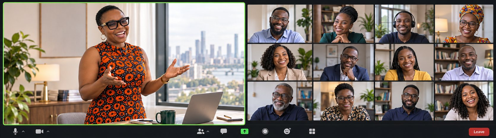

How Will I Earn a Living After I Move Back to Africa?
I used to dream about moving back to Africa. But every time I got serious, I came back to one question: how am I going to earn a living when I get there?

I used to dream about moving back to Africa. But every time I got serious, I came back to one question: how am I going to earn a living when I get there?
I spent more than 20 years in healthcare in the U.S. I knew how to earn a living as a nurse. When I moved back to Nigeria and started building a farm, I had a whole new business to learn. Growing peppers was one part. I also had to work out who would buy them, what they'd pay, and what I'd have left after labour, supplies and transport.
If I were planning my move today, I'd make two plans: one to earn from the experience I already have, and one that gives me time to build something in Africa. Here's how to think through both.
Pick the city or town. What will you spend each month on housing, food, health care, transport and internet? Add family commitments and any bills you'll still pay abroad, and note which currency each one is in. Your monthly total tells you how much income you need. (My guide How Much Does It Really Cost to Move Back to Africa? walks you through it.)
Ask yourself: "How many months can I pay my bills if the new business takes longer than expected?" Set aside your moving costs and the money for the business. Divide what's left by your monthly shortfall (your costs minus income you can count on). That's roughly how much time you have to get established.
And decide now what you'll do if you reach the halfway point and your income is still below target.

Think about the work people already trust you to do. Which of those problems could you solve from another country? Six ways to earn remotely while living in Africa:
Choose one route and test it while you're still abroad. Talk to your employer, pitch one paid project or sell one small workshop. What you learn will help you choose your move date.
This is exactly what I'll teach in my new training. Join the waitlist to be first in line:

Remote Careers for Diaspora Professionals
Free to join. You'll be the first to hear the dates.
Do you want to run a business, invest in one, or both? Agribusiness, real estate, logistics, or a problem your work abroad taught you to solve?
With farming, my question was simple: who is going to buy what I grow, at what price, and how often? Ask your version of that question. Find out what customers pay today, what it costs to serve them, and who will manage the day-to-day work. A trial stay gives you time to meet customers and test an idea before a bigger commitment.
Working through the bigger decision? My workbook, How to Move Back to Africa ($37), helps you assess your readiness and turn your answers into a plan.
This guide is general information, not financial, tax or legal advice.